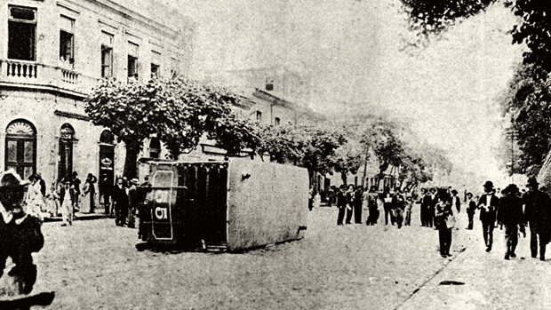
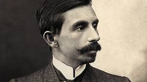
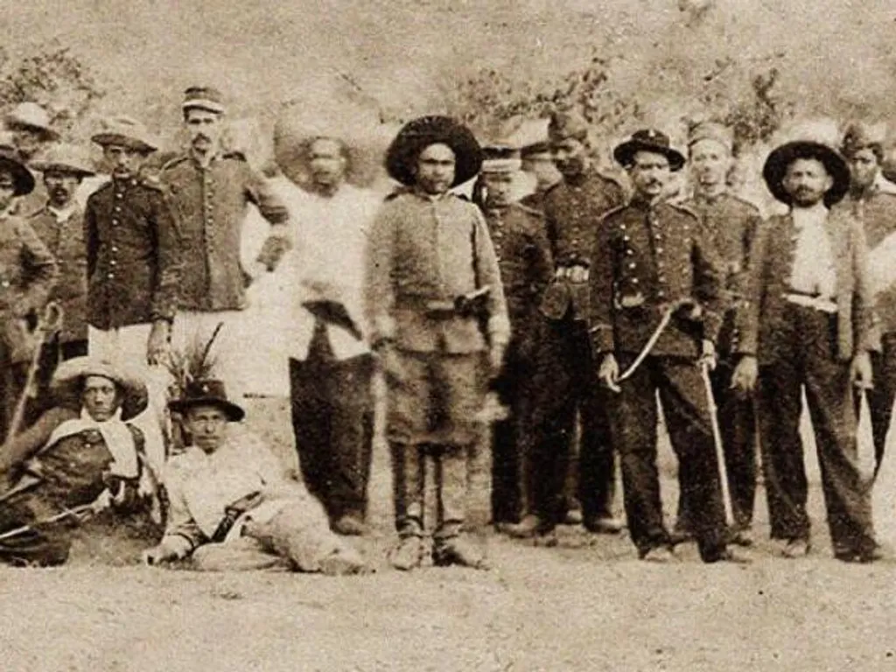

Contexto histórico
A transição do século XIX para o século XX pode ser classificada como período de grandes mudanças. Em território brasileiro, ocorria a mudança do governo monárquico para o republicano, período denominado República Velha, ou República do Café com Leite, resultado da oligarquia latifundiária de Minas Gerais e São Paulo.
Nesse mesmo período, a revolução industrial tomou conta do país, aumentando drasticamente a urbanização e a influência da burguesia e dos militares, consolidando novas classes sociais como o proletariado. A escravidão havia sido recentemente abolida, e com isso, a imigração tomou força com pretenção de suprir a lacuna de mão de obra antes escrava, agora sendo substituída por imigrantes de todo o mundo.
Com o crescimento da população recém alforriada e desempregados, tornava-se mais evidente ainda a desigualdade social, junto do distanciamento entre povo e gestores da república. Tudo isso culminou para que houvessem revoltas como a revolta da vacina, revolta da chibata e outras mais.

Características do pré-modernismo
O pré-modernismo não vem a ser uma academia literária, rompendo com as tradições passadas e a linguagem parnasiana. Agora buscando uma linguagem simples, coloquial e acessível, as obras abordavam a realidade do cidadão brasileiro, retratando seu dia a dia e pouco a pouco tomando viés social, expondo desigualdades sociais e quebrando a ilusão que o governo vendia.
De forma resumida, podemos citar as características como:
• Renovação na linguagem (agora simples e coloquial)
• Nacionalismo crítico
• Retratação da realidade brasileira
• Regionalismo
• Temas sociais
• Não existência de academia literária
Autores e obras
Euclides da Cunha
Euclides da Cunha nasceu em Cantagalo, no estado do Rio de Janeiro em janeiro de 1866. Desde os 3 anos vivia entre fazendas com os tios, que o criaram depois de se tornar órfão. Com 19 anos transferiu-se para a Escola Militar da Praia Vermelha, sendo expulso posteriormente por confrontar um ministro. Dedicou boa parte de sua vida à carreira militar, depois abandonando-a, dedicou-se à escrita e foi nomeado Superintendente de Obras Públicas de São Paulo.

Os sertões
Uma das obras mais marcantes de Euclides da Cunha, de cunho regionalista, representa os acontecimentos das encarniçadas batalhas da Guerra de Canudos, que teve palco no interior da Bahia, nos anos de 1896 e 1897.
